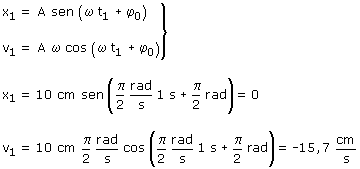

Ecuaciones del movimiento:
Aplicación: Datos: t1 = 1 s, Incógnitas: x1, v1  La partícula está en el origen moviéndose hacia la izquierda. Se veía venir el resultado: del extremo al centro se tarda un cuarto de período que en esta caso es un segundo. |